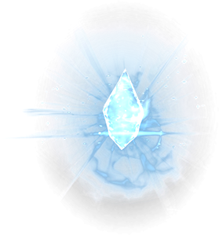
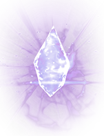

Никакая нация не имеет небес, которые
простирались бы выше, чем обитают
ВЕДУЩИЕ ЕДИНОЕ!
СТОЛКНУЛИСЬ СО СЛОЖНОЙ ЖИЗНЕННОЙ СИТУАЦИЕЙ?
 Непреодолимые обстоятельства мешают вам быть с любимым человеком?
Чувствуете, как какие-то силы управляют вами?
Устали бороться с проблемами в одиночестве?
ВЕПССКАЯ МАГИЯ ПОМОЖЕТ РАСПУТАТЬ
САМЫЕ СЛОЖНЫЕ СИТУАЦИИ И УКАЖЕТ ВАМ
ПРАВИЛЬНЫЙ ПУТЬ!
С какими бы вопросами вы не обратились ко мне: проблемы в отношениях, измены, неудачи в бизнесе, отсутствие второй половинки, постоянные ссоры с родными, отсутствие карьерного роста… я прежде всего провожу диагностику, на основании которой и принимаю решение, как, и в какой срок я смогу вам помочь. Ко мне приходят с разными бедами – от одних удается избавиться быстро, над положительным решением других – приходится долго работать….
Меня зовут Эльвира
В отличие от 98% так называемых магов, я получила свой ДАР по наследству. Мои предки - древние вепсы из Карелии. Способность помогать людям, исцелять, энергетически воздействовать на ситуации – генетическая предрасположенность нашей семьи и ее основная черта.
Вепсская магия – по праву считается одной из самых сильных на земле. Она основана на древних знаниях законов Мироустройства и Природы, одним из ее направлений является построение гармоничной жизни в ладу с собой и природой.
Магия – неотъемлемая часть моей жизни, она дает мне возможность сохранять и приумножать богатство моих клиентов, возвращать мир и покой в их семьи, благополучие и гармонию в жизнь.
Нойды (колдуны) моего рода, помимо традиционных обрядов и ритуалов на удачу, любовь, снятие проклятий и сглазов, венцов безбрачия… умели находить в лесу пропавший скот, домашних животных и людей – они вступали в непосредственное общение с лесными духами на границе, отделяющей мир людей от мира природы.